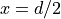
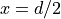
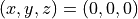
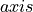

Sources¶
All the photon packet sources that can be used in the Monte Carlo
simulator are implemented by subclassing
xopto.mccyl.mcsource.base.Source. The
xopto.mccyl.mcsource module includes a number of commonly
used sources:
xopto.mccyl.mcsource.point.IsotropicPointimplements an isotropic point source.xopto.mccyl.mcsource.line.Lineimplements an infinitely narrow and collimated source.xopto.mccyl.mcsource.uniformbeam.UniformBeamimplements a uniform collimated source of elliptical cross section.xopto.mccyl.mcsource.gaussianbeam.GaussianBeamimplements a collimated Gaussian source of elliptical cross section.
All sources have a position attribute that defines the position of the
geometrical center of the source. This position is used as a reference point
for terminating photon packets that leave the simulation radius set
through the xopto.mccyl.mc.Mc.rmax property. Note that by default
all the sources point along the positive direction of the  axis and
enter the outer layer of the sample on the negative axis at
 .
axis and
enter the outer layer of the sample on the negative axis at
 .
Note
The refractive index of the source (not all the sources implement this property) is used to compute the initial photon packet weight (the specular reflectance at the source-sample boundary is subtracted from 1.0). The sources that do not implement a refractive index, inherit the value from the surrounding medium.
The UniformBeam,
xopto.mccyl.mcsource.gaussianbeam.GaussianBeam and all the
fiber sources
Isotropic point¶
This source can be placed inside and outside the sample. The following example shows how to create an isotropic point source in the center of the sample:
from xopto.mccyl import mc
src = mc.mcsource.IsotropicPoint((0.0, 0.0, 0.0e-3))
If the source is positioned outside of the sample, the entry point into the sample is determined by propagating the packet from the source position along the launch direction. The MC simulation will start after refracting the packet into the sample and subtracting the specular reflectance at the sample boundary from the initial weight of the packet. If the photon packet does not intersect the sample, the initial weight will be set to 0 and the packet will be launched from the center of the sample . Such zero-weight packets are immediately terminated and have no contribution to the fluence and surface detector, however will be included in the trace (have no effect on the sampling volume or other trace-based analysis due to the zero-weight). Note that in case the position lies within the sample, it will be used as the launch point and the packets will retain the full initial weight.
Line¶
The following example shows how to create a Line source that enters the sample
1 mm of the axis and propagates in the direction of the
axis:
from xopto.mccyl import mc
import numpy as np
ang = np.deg2rad(10.0)
src = mc.mcsource.Line(position=(0.0, 1.0e-3, 0.0), direction=(1.0, 0.0, 0.0))
The packets are always launched from the outer surface of the sample. The source position and direction are used to determine the launch point at the sample surface. From there, the packet is first refracted into the sample and the surface reflectance is subtracted from the initial packet weight. If a specular surface detector is used, the reflectance is deposited into that detector.
Uniform beam¶
A uniform beam of elliptical cross section can be created with
xopto.mccyl.mcsource.uniformbeam.UniformBeam source. The beam
diameter along the y and z axis is controlled by the diameter parameter.
In case the diameter is give as a scalar float value, the cross
section of the beam becomes circular. Note that the diameters are applied in
the coordinate system of the beam. Optionally, the beam can be repositioned
and tilted through the position and direction parameters.
The following example creates a uniform beam with incidence along the
 and a circular cross section diameter of 1 mm.
from xopto.mccyl import mc
src = mc.mcsource.UniformBeam(1.0e-3)
The packets are always launched from the top surface of the sample. The source position and direction are used to determine the launch point at the sample surface. From there, the packet is first refracted into the sample and the surface reflectance is subtracted from the initial packet weight. If a specular surface detector is used, the reflectance is deposited into that detector.
Gaussian beam¶
A Gaussian beam can be created with
xopto.mccyl.mcsource.gaussianbeam.GaussianBeam source. The standard
deviation ( ) of the beam can be independently set along
the x and y axis.
In case is give as a scalar
) of the beam can be independently set along
the x and y axis.
In case is give as a scalar float value, the value is
applied along the y and z axis. The beam is clipped at a distance of
 from the beam axis. The clip distance can be customized through
the
from the beam axis. The clip distance can be customized through
the clip parameter. Note that is applied in
the coordinate system of the beam. Optionally, the beam can be repositioned
and tilted through the position and direction parameters.
The following example creates a
GaussianBeam source with a
perpendicular incidence and with  1 mm and
1 mm and
 2 mm.
2 mm.
from xopto.mccyl import mc
src = mc.mcsource.GaussianBeam([1.0e-3, 2.0e-3])
The packets are always launched from the surface of the sample. The source position and direction are used to determine the launch point at the sample surface. From there, the packet is first refracted into the sample and the reflectance is subtracted from the initial packet weight. If a specular surface detector is used, the reflectance is deposited into that detector.